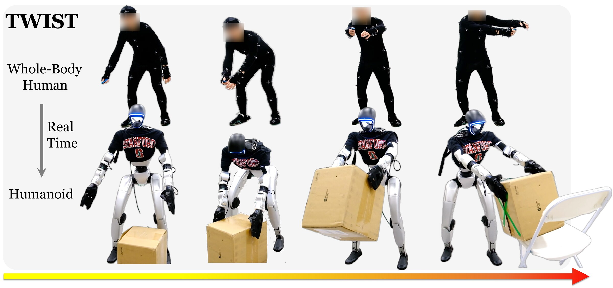
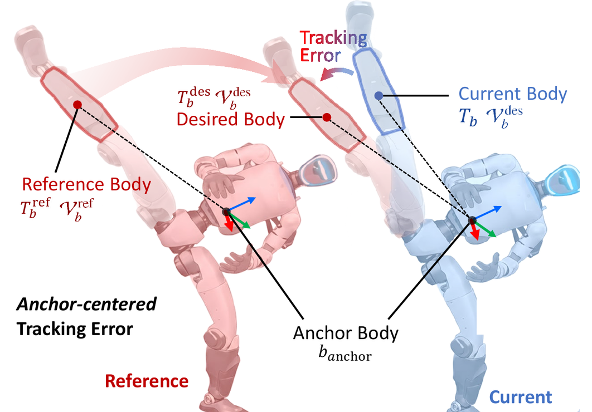
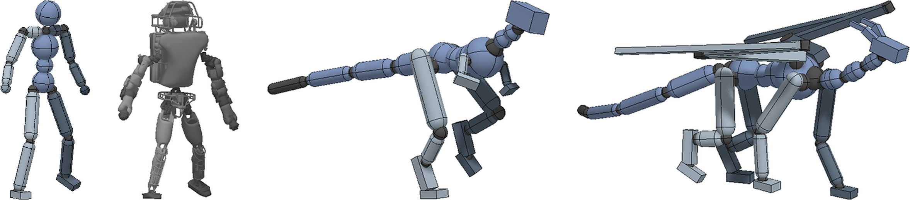
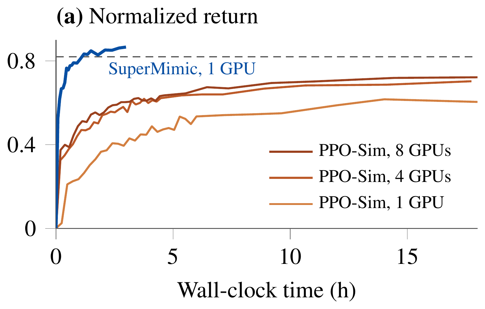
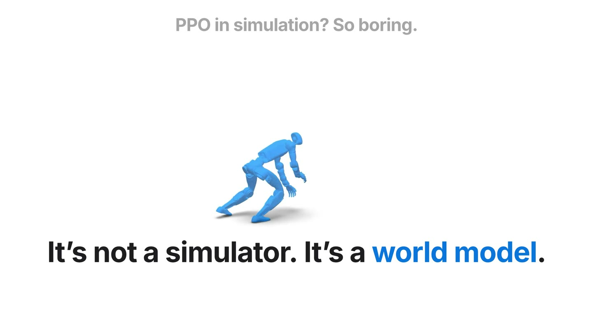
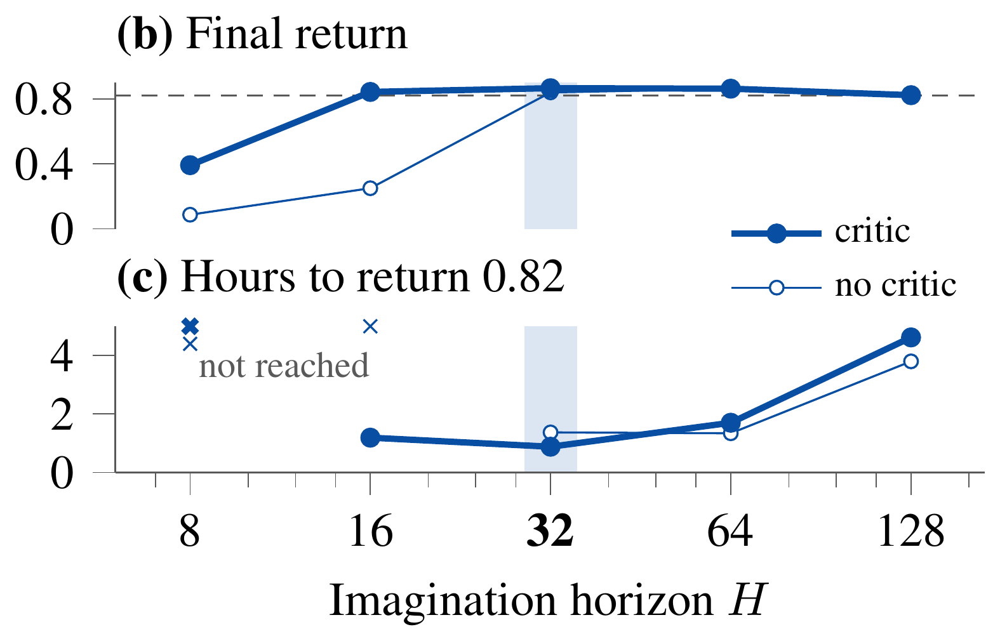

具身智能中的强化学习 · 01 下
SuperMimic
一张卡训 3 小时，超过 128 张卡训 7 天
上集讲了RL 基础（PPO 五步一轮）· ETH 四足：仿真里练，零样本上真机
这一集Mimic 是什么 → DeepMimic → BeyondMimic → SONIC → SuperMimic：在世界模型里练
可lip
00上集回顾
上集回顾：PPO 五步一轮，最花时间的是在仿真里跑
00开场
什么是 Mimic：给它一段人的动作，让它学着做出来

上：人做动作 · 下：机器人跟着做
MIMIC = 模仿
这里专指动作跟踪motion tracking
每一帧跟上参考动作：录好的一支舞，或一个正在动的人
为什么不直接回放人的关节角
只知道姿势，不知道每个关节出多大力
人和机器人身材、重量、电机都不一样，照着放就摔
所以
动作照着人，怎么用力靠 RL
不是上集说的模仿学习：那个要人示范每一步怎么做；Mimic 只要人的动作长什么样
00开场
Mimic 放进上集的 PPO：只改了两样
| 上集 · 机器狗走路 | 这一集 · Mimic |
|---|
| 策略看什么 | 身体感觉 + 摇杆给的速度 | 身体感觉 + 参考动作接下来几帧，要它做成什么样 |
| 奖励 | 人一项项写跟上速度加分，晃了、费电扣分 | 跟参考动作像不像位置、朝向、速度差得越少，分越高 |
| 学会什么 | 按指令走 | 把这段动作做出来 |
| 怎么练 | 仿真里几千个分身 · PPO 五步一轮 | 一样 |

红 = 参考动作 · 蓝 = 机器人：每一帧比一比
00开场
这一集：从 DeepMimic，到 SuperMimic
2018 · DeepMimic
第一次做成 Mimic
Deep = 深度强化学习
仿真里的角色
→
2025 · BeyondMimic
侧手翻上真机
Beyond = 不止模仿
一个动作一个策略
→
2025 · SONIC
一个策略跟所有动作
Supersizing = 做大
128 张卡 × 7 天
→
2026 · SuperMimic · 本集重点
一张卡 3 小时
还是模仿人，换了练法
先学个世界模型，在里面练
任务都一样模仿人的动作，奖励都是「跟人像不像」
SuperMimic 换的是练法前三篇：在仿真器里用 PPO 一遍遍试 → 它：先学一个世界模型，在里面练
01照着人学
先补两块铺垫，再看 Mimic 怎么起步
刚讲完
Mimic 是什么
给机器人一段人的动作，用 RL 学会做出来；放进 PPO 只改两样：多看参考动作，奖励看像不像
→
接下来
照着人学
域随机化 → 为什么跳舞非得照着人学 → DeepMimic：Mimic 的范式（详讲）→ 七步流程
为什么接着讲仿真不可能调到全准；跳舞、翻跟头的奖励也没法一项项写
开场照着人学一个动作所有动作SuperMimic现状
01照着人学
域随机化：不去调准，每局随机改一遍物理
OpenAI · 2018 · Shadow 五指手 ｜ 指尖位置 + 方块位姿 → 20 个关节的目标，12 Hz ｜ PPO + LSTM
每一局开头随机
摩擦×0.7–1.3
质量×0.5–1.5
尺寸×0.95–1.05
重力方向
动作延迟
肌腱间隙
传感器噪声
相机、灯光、颜色
代价：全部随机化要约 100 年仿真经验，约 50 小时
不随机化只要约 3 年，约 1.5 小时
01照着人学
跳舞的奖励写不出来：业界的答案是照着人学
2021 · legged_gym
人一项项写
9 项加权求和
权重靠人反复试
→
2023 · Eureka
GPT-4 写
还是一项项写奖励代码
换成 LLM 写、自动改
→
2025–26 · 人形
照着人学Mimic
奖励 = 和人类动作像不像
DeepMimic 2018 提出
「不再为走、转、蹲、够分别设计奖励函数，直接从人类动作数据里学跟踪。」
Figure · Helix 02 官方博客（2026-01-27）· 讲 System 0 全身控制器 · 中文为转译
01照着人学
Mimic 的范式从这篇来：详讲 DeepMimic
刚讲完
为什么要照着人学
跳舞、翻跟头的奖励写不出来；业界的答案：奖励 = 跟人的动作像不像
→
接下来
DeepMimic 范式
基本情况 → 整体架构（六块）→ 人的数据长什么样 → 状态和动作 → 奖励 → 两个技巧 → 后面三篇各改了哪一块
为什么接着讲它第一个把 Mimic 做成；后面 BeyondMimic、SONIC、SuperMimic 都照这个范式，只改其中几块
开场照着人学一个动作所有动作SuperMimic现状
01照着人学
DeepMimic：照着几秒动捕，仿真角色学会后空翻
机构 · 发表
UC Berkeley + UBC · SIGGRAPH 2018
一作 Xue Bin Peng · 代码开源
输入 → 输出
身体状态 + 动作进度 → 每个关节的目标角度
一秒 30 次 · 纯仿真里的角色，不是真机器人
规模
每个技能只用 0.5–5 秒动捕
人形学会 24 种技能 · 一个技能训一个策略

同一套方法，四种身体：人形 · Atlas · 霸王龙 · 龙
01照着人学
Mimic 范式：一共六块，后面都照这个来
① 参考动作：人的一段动作（动捕），换到角色身上，变成每一帧一个目标姿势
② 策略看什么：自己身体现在的状态，加上「动作演到哪了」的进度 φ
③ 策略输出：每个关节的目标角度，交给关节去追——不是直接出力
④ 环境：PD 控制器按目标角度算出力矩，物理仿真算出下一步；新状态再回到 ②
⑤ 奖励：仿真里的姿势，跟参考动作同一时刻的姿势比，越像分越高；摔了这一局就结束
⑥ 怎么练：就是上集的 PPO；再加一招，每局从参考动作里随机挑一帧开始
后面的 BeyondMimic、SONIC、SuperMimic，都是这六块，只改其中几块
01照着人学
① 人的数据：一帧 44 个数，只有姿势、没有力
① 数据②③④ 状态 · 动作⑤ 奖励⑥ 怎么练
1
动捕人穿上贴了标记点的衣服做动作，周围一圈相机记下每个点在哪
→
2
动捕库录好的动作一段段存起来 · DeepMimic 用 CMU、SFU 的公开库
→
3
处理，换到角色身上人工处理，再换到角色的骨架上（重定向）
→
4
一帧一行的数据每帧 44 个数 · 一段动作就是一串帧
01照着人学
四元数：4 个数，记「绕哪根轴、转了多少度」
① 数据②③④ 状态 · 动作⑤ 奖励⑥ 怎么练
三个角度（欧拉角）· 毛病一
万向节锁
转到某些姿势，两根轴重合，一下丢掉一个方向；大角度翻转容易碰到
毛病二
180° 那里会跳
179° 和 −179° 只差 2°，数字却差了 358°
四元数
两个毛病都没有
两个朝向差几度直接算，DeepMimic 比像不像就这么算；两帧之间能平滑插值；旋转矩阵要 9 个数，它只要 4 个
01照着人学
②③④ 状态和动作：看 13 块，管 12 个关节
① 数据②③④ 状态 · 动作⑤ 奖励⑥ 怎么练
01照着人学
⑤ 奖励：每一帧都跟参考动作比，像不像
① 数据②③④ 状态 · 动作⑤ 奖励⑥ 怎么练
每一步的奖励
关节姿态0.65
关节速度0.1
手脚位置0.15
质心位置0.1
每一项按误差打分：一模一样得 1，差得越多越接近 0
扔球任务：只给「扔中目标」的奖励，不给参考动作
只给任务奖励扔中 93%，抱着球跑过去
模仿 + 任务扔中 75%，正常的投掷动作
01照着人学
⑤ 奖励怎么算：每一帧比四样，加权平均
① 数据②③④ 状态 · 动作⑤ 奖励⑥ 怎么练
一帧的奖励（数字是示意）
姿态0.8× 0.65
速度0.6× 0.10
手脚0.7× 0.15
重心0.9× 0.10
这一帧≈ 0.78
每一帧都这么打分，一整局平均下来，就是后面看到的那个 0 到 1 的分数
01照着人学
⑥ 两个技巧：从动作中间开始，摔了就结束
① 数据②③④ 状态 · 动作⑤ 奖励⑥ 怎么练
参考状态初始化 · RSI
每一局从动作里随机一帧开始
分数 = 一整局平均每帧有多像 · 去掉它：前后都像，分数只少一点，但只会往后小跳，从没翻过去
早终止
头或躯干一碰地，这一局立刻结束
剩下的时间全是 0 分 · 去掉它，容易学成躺在地上比划动作
01照着人学
范式不变：后面三篇，各改了哪一块
| DeepMimic2018 | BeyondMimic2025 | SONIC2025 | SuperMimic2026 · 本集重点 |
|---|
| ①参考动作 | 0.5–5 秒动捕 | 约 2.5 小时 | 约 700 小时商业动捕 | 264 小时公开动捕 · 12.9 万段 |
| ②策略看什么 | 身体状态 + 进度 φ | 身体感觉 + 参考当前帧 | 身体感觉 + 参考（多种指令统一编码） | 身体感觉 + 接下来 10 帧参考 |
| ③策略输出 | 关节目标角度 | 关节目标角度 | 关节目标角度 | 关节目标角度 |
| ④在哪练 · 用在哪 | 仿真里的角色 | 仿真里练 → 真机 G1 | 仿真里练 → 真机 G1 | 仿真只采数据 → 世界模型里练 |
| ⑤奖励 | 姿态 · 速度 · 手脚 · 质心 | 像不像：以躯干为锚 | 沿用 BeyondMimic | 沿用 BeyondMimic |
| ⑥怎么练 | PPO · 从中间开始 · 摔了就结束 | PPO · 难的片段多练 | PPO · 128 卡 × 7 天 | 直接求导 · 1 卡 3 小时 |
| 一个策略管 | 一段动作 | 一段动作 | 所有动作 | 所有动作 |
01照着人学
从一段人类动作到真机：七步
1
拿人的动作
动捕，或者直接拍视频估姿态
AMASS · LAFAN1 · ASAP
2
换到机器人身上
人体姿态 → 机器人关节角（重定向）
H2O · ASAP
3
筛掉做不到的
仿真里先跟一遍，跟不上的扔掉
H2O · GMT · ASAP
4
几千个分身练跟踪
奖励 = 跟得像不像 · PPO
DeepMimic · BeyondMimic · SuperMimic 换的是这一步
5
随机化 + 老师学生
扛住仿真和真机的差距
Radosavovic · BeyondMimic
7
做成通用底座
一个策略跟任意动作，上面接遥操作、VLA
GMT · TWIST · SONIC
02一个动作
单个动作怎么上真机：详讲 BeyondMimic
刚讲完
照着人学
奖励 = 跟人的动作像不像；七步流程里第 4 步：在仿真里用 PPO 练跟踪
→
接下来
BeyondMimic
最大的不同：一套配方，不用逐个动作调，侧手翻就上了真机 · 基本情况 · 架构 · 核心贡献 · 把仿真建准 · 奖励怎么设计 · 以躯干为锚 · 结果
为什么接着讲SuperMimic 是同一位一作做的：奖励、动作、随机化，全沿用这一套
开场照着人学一个动作所有动作SuperMimic现状
02一个动作
和之前比，最大的不同：一套配方，不用逐个动作调
之前的真机 MimicASAP、KungfuBot 等 · 2025
仿真和真机的差距一堆惩罚项硬扛，ASAP 还拿真机数据学修正
02一个动作
BeyondMimic：树林里的空中侧手翻，真机做出来
机构 · 发表
UC Berkeley + Stanford
Science Robotics 2026 · 代码全部开源
输入 → 输出
参考动作 + 自身感觉 → 关节目标角
参考动作当前帧、躯干位姿误差、IMU、关节角和速度、上一步动作 · 50 Hz
部署
机器人自带 CPU，每步不到 1 ms
宇树 G1 · 不用外部动捕
02一个动作
架构：参考动作不光用来打分，还喂给策略
论文补充材料图 S1 · 左边策略（Actor）、右边价值网络（Critic）、中间仿真 · 蓝框 = 来自参考动作的输入
DeepMimic策略只看自己的身体 + 一个进度 φ，参考动作只用来打分
BeyondMimic参考这一帧也喂进去 → 用的时候也得一帧帧给参考
1策略看什么 · 每 20 毫秒一次
来自参考动作
ψ 参考这一帧的关节角、关节速度只当进度提示：现在该做到哪了
eanchor 躯干和参考差多少位置 3 个数 + 朝向 6 个数：保持平衡、找回位置
来自自己的身体
IMU：身体转多快、移多快
关节角 · 关节速度 · 上一步动作
2输出每个关节的目标角，PD 变成力矩
3仿真，随机化只有 3 样 后面细讲
4奖励：4 项比像不像 后面细讲
5价值网络多看：每个部位相对躯干在哪 只在训练时用
02一个动作
核心贡献：不是新算法，是一套最简配方
1先把仿真建准
电机惯量按物理算，PD 增益按公式定，部署延迟压到最低
→
2随机化只留 3 样
只管真正不确定的：地面摩擦、关节零位、躯干重心
→
3奖励只要 7 项
4 项比像不像 + 3 项惩罚，不用一堆惩罚项去硬扛
→
4所有动作一套配方
奖励、超参数都不按动作调，新动作直接训
「不用调参」是结果，原因在第 1 步 · 算法还是 PPO，新东西在工程和配方
ASAP2025 · 预训练奖励
17项
跟踪 8 项，权重 1 / 1.6 / 2.1 / 0.75 / 0.5 … 各不相同 · 正则 5 项：力矩、动作变化、脚的朝向、打滑… · 惩罚 4 项：超限、提前结束
BeyondMimic所有动作同一套
7项
跟踪 4 项，权重都是 1 · 惩罚 3 项：不平滑、超限位、自己撞自己
02一个动作
反直觉：不靠多随机化，先把仿真建准
建准
电机惯量按厂商参数和减速比算出来
PD 增益按公式定：固有频率 10 Hz、阻尼比 2
部署延迟C++ 实时框架，压到最低
随机化只留 3 样
地面摩擦和弹性
关节零位±0.01 rad，脚踝 ±0.1 rad
躯干重心位置另加随机推一把
真机消融 · 部署时人为多加的延迟
跟踪误差 · 不加延迟时记为 1
电机惯量设成 0甩过头、自碰撞
观测里加历史帧跟踪误差反而变大
02一个动作
奖励怎么设计：一组容忍度，管所有动作
① 4 项比像不像每项 0–1 分 · 权重都是 1
挑一组身体部位（含双手双脚），每帧比四样：所有部位的误差取平均，再换成分数
| 比什么 | 说的是 | 容忍度 σ |
|---|
| 位置 | 每个部位在哪
以躯干为锚，后一页讲 | 0.3 米 |
| 朝向 | 每个部位朝哪 | 0.4 弧度约 23° |
| 线速度 | 每个部位往哪移、多快 | 1 米/秒 |
| 角速度 | 每个部位转多快 | 3.14 弧度/秒约每秒半圈 |
σ 选的是「适合大多数动作」的值，一组管所有动作对比 KungfuBot：容忍度按每段动作单独算，训练中还在调
误差 → 分数分数 = e−误差² / σ²
② 3 项惩罚和动作无关的通用规矩
动作不平滑相邻两步的动作差多少× 0.1
超关节软限位软限位 = 机械限位的 90%，伤硬件，罚得最重× 10
自己撞自己手脚以外的部位，碰撞力超过 1 牛就算× 0.1
另可加一项：躯干自己跟参考的位置、朝向，权重 0.5
02一个动作
比位置：以躯干为锚，整体偏了手脚不扣分
躯干自己
看一眼和参考差多少
观测里给躯干的位置、朝向误差 · 用来保持平衡、慢慢把位置找回来
难的片段多练
哪段失败多，就多从哪段开始
动作切成 1 秒一格，按失败次数挑起点 · DeepMimic「从中间开始」的升级版
算法
还是 PPO
网络和上集机器狗一样大 · 一段动作训一个策略
02一个动作
侧手翻转速接近人，开源后成了默认配方
7.01 rad/s
空中侧手翻时骨盆的平均角速度 · 熟练人类 7.75
5 次
C 罗庆祝跳转身，连着做 · ASAP 报告的是 1 次
70.8%
77 人看走路、跑步视频，选它比宇树原厂控制器更像人
03所有动作
一个动作一个策略之后：通用，再做大
刚讲完
BeyondMimic
同一套配方，每段动作各训一个策略；来一段新动作，就要再训一次
→
接下来
一个策略跟所有动作
GMT、TWIST：一个策略跟任意动作 → SONIC：数据、模型、算力越大越好 → 用的时候，参考动作从哪来
为什么接着讲只有一个策略能跟任意动作，上面才能接遥操作、接 VLA
开场照着人学一个动作所有动作SuperMimic现状
03所有动作
一个策略跟所有动作：跳舞和遥操作是同一种能力
GMT · UCSD + SFU · 2025
一个策略，跟 8925 段动作
共 33 小时 · 混合专家 · 一张 4090 训约 3 天
TWIST · Stanford + SFU · 2025
人穿动捕服，机器人实时跟着做
老师看未来 2 秒，学生只看当前一帧 · 电机连续 5–10 分钟就过热
03所有动作
SONIC：数据、模型、算力，越大越好
4200 万参数
从 120 万放大到 4200 万
128 卡 × 7 天
≈ 2.1 万 GPU 小时
75%
接 GR00T N1.5，5 个全身任务平均
03所有动作
用的时候：参考动作有四个来源，大多不用真人
参考动作接下来几帧，身体该摆成什么样
＋
自己的身体感觉关节角、关节速度、IMU
→
跟踪策略Mimic 练出来的网络：照着做、别摔
→
关节目标角交给电机
①提前录好，存成文件
动捕录一次，转成关节角存好；用的时候按时间一帧帧喂给策略
例：BeyondMimic 的侧手翻，全在机器人自己的电脑上跑 · DeepMimic 连参考都不看，只给进度
真人只在录的时候出现一次
②真人实时带
人穿动捕服或戴 VR，人的动作实时变成参考，机器人同步跟着做
例：TWIST 搬箱、SONIC 的 VR 遥操作 · 采来的数据拿去训 ④
真人要，一直在
③生成模型现编
推摇杆、打一句话、放段音乐，模型现场编出参考动作，边做边编
例：SONIC「像猴子一样」「左手出拳」· BeyondMimic 的扩散模型听摇杆、绕障碍
真人推摇杆、打字就行
④大模型给指令
VLA 看摄像头，按任务自己决定下一步，输出指令交给跟踪策略执行
例：GR00T N1.5 + SONIC，踩开垃圾桶扔可乐 · 5 个任务平均 75%
真人不用在场，给个任务
04SuperMimic
做大的代价：2.1 万 GPU 小时。SuperMimic 换了练法
刚讲完
SONIC
数据、模型、算力越大越好；最大一版 128 张卡训 7 天，约 2.1 万 GPU 小时
→
接下来
SuperMimic
任务没变，还是模仿人；换的是范式里的 ④ 和 ⑥：不在仿真里一遍遍试，先学一个世界模型，在里面想象着练、直接求导
为什么接着讲普通实验室玩不起；而且这回改的是 RL 本身：上集讲的 PPO，被它换掉了
开场照着人学一个动作所有动作SuperMimic现状
04SuperMimic
先看视频：一个策略，一张卡训 3 小时
04SuperMimic
SuperMimic：一张 H100 训 3 小时，超过 SONIC
机构 · 发表
UC Berkeley · CoRL 2026 Oral
一作 Qiayuan Liao（BeyondMimic 一作）· 2026-10-20 挂出
输入 → 输出
身体感觉 + 参考动作 → 29 个关节目标
过去 10 帧身体感觉 + 接下来 10 帧参考动作 · 一秒 50 次
一个策略
跟 12.9 万段动作
264 小时公开动捕 · 宇树 G1 · 零样本上真机
04SuperMimic
PPO 的问题：每段动作都在重新试，加卡也不怎么涨
PPO 把仿真当黑盒
只看见做了什么、得了几分
往哪改，靠大量试错、按优势去估
动作千差万别，身体是同一副
PPO 没用上这一点
每段动作都在重新试，动作库越大越贵
同样 40 段动作 · 同样的奖励和网络
PPO 4 卡 → 8 卡：0.70 → 0.72
SuperMimic 一张卡，1.2 小时就到 0.82

纵轴：跟踪得分 · 横轴：训练小时 · 蓝 = SuperMimic 一张卡，橙 = PPO 1 / 4 / 8 张卡
04SuperMimic
为什么不更简单：三条现成的路，各卡在哪
| 做法 | 往哪改，方向从哪来 | 卡在哪 |
|---|
| PPO 在仿真里练现在的主流 · 上集讲的 | 试很多次，按优势去估 | 估出来的方向噪声大；动作越多越贵 |
| 直接对仿真器求导可微仿真 | 仿真器自己算梯度 | 接触是一下一下的，不光滑；常用的仿真器本身不给梯度 |
| 在世界模型里跑 PPO比如 ETH 的 RWM | 想得快了，但还是试、还是估 | 方向还是估出来的 |
| SuperMimic学一个可求导的世界模型 | 顺着世界模型直接算 | 仿真器照常用，只拿来采数据 |
04SuperMimic
发明思路：动作千差万别，身体的物理只有一套
背景
一个策略，跟住尽量多的人类动作
动作库越大越杂，控制器越强：BeyondMimic 逐个练再合并，SONIC 一个策略硬练
→
卡在哪
动作越多，算力越贵
SONIC：128 张卡 × 7 天 ≈ 2.1 万 GPU 小时
→
根子在哪
动作不同，身体的物理是同一套
PPO 没把这套物理单独学出来，每段动作都在重新试「这么用力会怎样」：动作多 = 试得多
问题所以这么做落在哪一步
共用的物理，没被单独学出来
→
单独学成一个世界模型，所有动作共用amortize
② 学世界模型
往哪改，靠大量试错去估，噪声大
→
世界模型能求导：顺着它直接算方向
③ 在想象里练
直接对仿真器求导：不给梯度，接触也不光滑
→
梯度从世界模型来；仿真器照常用，只管采数据
① 采数据
04SuperMimic
训练全景：三步一个循环，一起转
目标和上集一样：一局的奖励打折加起来越大越好。这一集要看的，是「往哪改」怎么算出来
① 采数据：策略在仿真器里照常跑，动作上加一点小噪声
每一步的状态、动作、这一局的物理参数、奖励，全记进回放池
② 学世界模型：从回放池抽 8 步一段，学会预测下一步——状态、奖励、会不会摔
③ 在想象里练：从回放池抽起点，在世界模型里往前想 32 步，算这 32 步的总分
32 步以后还能拿多少，交给价值网络估——和上集一样，用 GAE 训
改策略：总分直接对策略参数求导，梯度沿 32 步传回来；改完再去采数据，三步一个循环
04SuperMimic
① 采数据：仿真照常跑，每一步记进回放池
① 采数据② 学世界模型③ 想象里练
4096 个环境 / 卡
每个环境留最近 1000 步，新的挤掉旧的
旧数据也能用
物理规律不随策略变：以前的策略采的，照样能拿来学世界模型
噪声只为世界模型
让它见到更多种动作；策略本身是确定的，不抽样
难的多练
动作切成 1 秒一格：一半均匀挑起点，四成偏向得分低的格
04SuperMimic
② 学世界模型：往前推 8 步，每步和仿真对答案
① 采数据② 学世界模型③ 想象里练

白 = 仿真器 · 蓝 = 世界模型推出来的
为什么要喂本局物理 ξ
同一个动作，地滑和不滑，结果不一样
为什么是确定的
随机从哪来都知道：物理参数已经喂进去，传感器噪声在外面另加
04SuperMimic
③ 在想象里练：往前想 32 步，把总分对策略直接求导
① 采数据② 学世界模型③ 想象里练
从回放池里抽一个真实记录过的状态当起点，带上这一局的物理参数
策略看世界模型给的观测，出动作；世界模型算出下一步状态、这一步的奖励、摔没摔的概率
就这样往前想 32 步，也就是 0.64 秒——全程不碰仿真器
32 步以后还能拿多少，交给价值网络估
总分 = 32 步的奖励打折加起来 + 价值网络补的尾巴；越可能摔，后面的奖励打折越多
世界模型能求导，总分对策略参数直接求梯度，沿 32 步传回来改策略：方向是算出来的，不是估出来的
04SuperMimic
PPO 靠试出来估方向，SuperMimic 顺着模型算
① 采数据② 学世界模型③ 想象里练
都能往前推：仿真器和世界模型都能算下一步
只有世界模型能往回传：梯度一步步传回策略
上：PPO，策略带随机，同一个动作试很多次，越往后越散，叠在一起像一团雾；看哪几次分高，估出方向
下：SuperMimic，只推一条，从最后一步往前，把方向一步步算回来
04SuperMimic
价值网络怎么训：拿想象的 32 步，从后往前算答案
① 采数据② 学世界模型③ 想象里练
它看什么
完整状态 + 参考动作 + 本局物理
比策略看得多：反正只在训练时用，上真机不带它 · 两层，256、128
什么时候训
先改策略，再训它
每轮：用它给 32 步补尾巴、改策略 → 再拿同一批想象轨迹算答案、更新它
和上集比
一样：拿回报当答案，用 GAE 算
不一样：数据来自想象，奖励和摔倒概率来自世界模型的两个打分头
04SuperMimic
价值网络：管 32 步以外的事，被推一把才站得稳
① 采数据② 学世界模型③ 想象里练

横轴：往前想几步 · 上：最终得分 · 下：训到 0.82 要几小时 · 粗线 = 有价值网络
去掉它
只想 8 步、16 步：训不出来
想 32 步能训到差不多的分，但更短视
被推一把 · 0.5–4 m/s
有它：0.5–2.4 秒站稳
没有：0.5 m/s 就一直踉跄，4 m/s 摔倒
想太远也不好
64 → 128 步：时间差不多翻 3 倍
32 步最快训到 0.82，所以默认想 32 步
04SuperMimic
和上集的 PPO 比：目标没变，变的是方向怎么来
| PPO（上集） | SuperMimic |
|---|
| 在哪练 | 仿真器里真跑 | 世界模型里想象仿真器只用来采数据 |
| 策略 | 出概率，按概率抽 = 探索 | 确定的，不抽样噪声只在采数据时加 |
| 数据 | 一批用完就扔 | 存进回放池，新旧都用 |
| 回报 · 价值 | 奖励打折加起来 · 价值网络用 GAE 训 | 一样：想 32 步 + 价值网络补尾巴 |
| 怎么改策略 | 按优势调概率，每次最多改 20%估方向 | 不算优势，总分直接对参数求导算方向 |
04SuperMimic
为什么省 1000 倍：一个模型，想得快，方向准
原因一
一个世界模型
管所有动作
0.007–0.011
动作库从 1 小时加到 264 小时，预测误差一直在这个范围
原因二
想得快
>10倍
比 MuJoCo Warp 仿真快 10 倍以上；并行 6.4 万个时 62 倍
原因三
方向准
≈64倍
同样在世界模型里练，到 PPO 的最好成绩，少用约 64 倍的想象步数
04SuperMimic
结果：12.9 万段动作，失败 179 → 25 → 0
| 12.9 万段动作 · 跟丢就算失败 | SONIC
公开模型 | SuperMimic
1 卡 3 小时 | 2 卡
9.8 小时 |
|---|
| 侧滚22 段 | 22 | 2 | 0 |
| 空翻 360° / 180° / 90°44 段 | 44 | 1 | 0 |
| 躺下、休息、起身99 段 | 28 | 8 | 0 |
| 立定跳远24 段 | 15 | 0 | 0 |
| 一支舞8 段 | 8 | 0 | 0 |
| 交叉腿 · 快速转圈30 段 | 12 | 3 | 0 |
| 其余129,287 段 | 50 | 11 | 0 |
| 合计 | 179 | 25 | 0 |
口径：数据 264 小时（SONIC 611 小时）· 卡 H100 vs L40 · 测的是训练里用过的动作
得分
一张卡 3 小时，超过 SONIC 公开模型
SONIC：128 张 L40 × 7 天 ≈ 2.1 万 GPU 小时
04SuperMimic
上真机：一个策略，零样本，侧滚、空翻都能做
真机上只跑策略网络
10 帧身体感觉 + 10 帧参考动作 → 29 个关节目标
一秒 50 次 · 世界模型、价值网络都留在训练里
04SuperMimic
还没解决的：只在平地，世界模型没见过真机
局限 · 作者自己写的
世界模型只用仿真数据学没用过真机数据
只在平地上没有台阶、地形，也不碰物体
多种指令一起训还很初步
还要注意
意义
算力不再是瓶颈
一次实验一张卡：动作跟踪「越大越好」的规律，普通实验室也测得起了
同一个世界模型，还能直接用 RL 训下游
速度指令：672 个里 650 个比蒸馏更准
初步实验 · 蒸馏版在数据很少的急转弯上会摔
04SuperMimic
我的理解：世界模型只学身体的物理，和动作无关
它不学的
动作本身那是策略的事
图像输入只是一串身体的数
真机只用仿真数据
被推一把随机推从训练里去掉了，确定的模型学不了这种跳变
证据
0.007–0.011
动作库从 1 小时加到 264 小时，8 步预测误差一直在这个范围：动作变多，物理没变
名字一样，难度不同
Cosmos、Genie 预测视频画面，这里只预测身体状态
04SuperMimic
我的理解：路线不新，选对了问题，做扎实了
① 路线早就有
仿真角色里早有人这么做
SuperTrack · 2021学一个可求导的模型，顺着它训动作跟踪
ControlVAE 2022 · MoConVQ 2024做到几十小时动作
SuperDyno · 2025做到上万段动作
SuperMimic 多走的一步真机人形 · 12.9 万段 · 一张卡 · 加了价值网络 · 和 PPO 正面比
② 问题天然合适
这道题特别适合求导
状态是一串干净的数没有图像，三层 MLP 就学得准
随机性的来源都清楚摩擦这些当输入、噪声在外面加，模型可以是确定的
每 20 毫秒都有奖励论文说训练很稳，归因于奖励稠密
同一个身体、平地、不碰物体所有动作共用一套物理，才摊得薄
仿真器一直给标准答案世界模型算错了，随时用新数据校正
③ 让求导稳住
几个关键设计
学一个可求导的替身不对仿真器求导：它不给梯度，接触也不光滑
只想 32 步，后面交给价值网络想到 128 步反而更慢、分更低
世界模型练「连推 8 步」学会纠正自己的误差，推很长也不飘
摔倒用概率表示总分处处能求导
梯度裁剪先整体裁到 1，再逐个裁到 0.1
05现状
论文讲完，看产业里用到了哪一步
刚讲完
SuperMimic
学一个可求导的世界模型，在想象里练、直接求导：一张卡 3 小时，零样本上真机
→
接下来
现状与收尾
Figure、波士顿动力、Agility、宇树 · 离「解决」还有多远 · 下一期
为什么接着讲看这套方法在产品里是不是真的在用，还差什么
开场照着人学一个动作所有动作SuperMimic现状
05现状
运动控制：RL 已经是工业标配
Figure · Helix 02 的 S0 2026-01
109,504行 C++
被一个约 1000 万参数的 RL 网络替换；每秒 1000 次，仿真里 20 万多个并行环境，跟踪 1000 多小时人类动作
Boston Dynamics · Atlas 踢球 2026-06
≈ 1 年→ 24 小时
约一年的实体试错，压进 24 小时的并行仿真；几乎所有技能第一次上真机就成功
Agility · Digit 全身控制 2025-08
< 100 万参数
仿真里练 3–4 天，相当于几十年；零样本上真机
宇树 · 开源 RL 仓库 2023–2026
3套
Isaac Gym（2023）→ Isaac Lab（2025）→ mjlab（2026）；动作模仿默认用 BeyondMimic
05现状
离「解决」还有多远
运动控制离「解决」还很远；加了视觉，sim-to-real 难很多
Nikita Rudin（legged_gym 作者，现 Flexion CEO）· TWIML 播客 · 2026-01 · 转述
学一支新舞……往往需要从零开始训练
王兴兴（宇树）· 2025 世界机器人大会 · 澎湃新闻
仿真只能带你走这么远，靠真机测试才能变好
Boston Dynamics · Atlas 博客 · 2026-05 · 转述
电机过热 · 大多只在平地 · 动作和定位还依赖动捕
TWIST、ASAP、BeyondMimic、HuMBLE 论文里自己写的局限
05收尾
这一集：从照着人学，到在世界模型里练
下一期
VLA 的
R1 时刻
小脑已经能在世界模型里练
下期：大脑（VLA）怎么在仿真、世界模型里用 RL 练
①人形怎么学会跳舞翻跟头
照着人学DeepMimic · 奖励 = 像不像
一个动作BeyondMimic · 一套配方
所有动作SONIC · 128 卡 × 7 天
②SuperMimic 换了什么
在世界模型里想象仿真只用来采数据
直接求导不靠采样估方向
价值网络补尾巴管 32 步以外